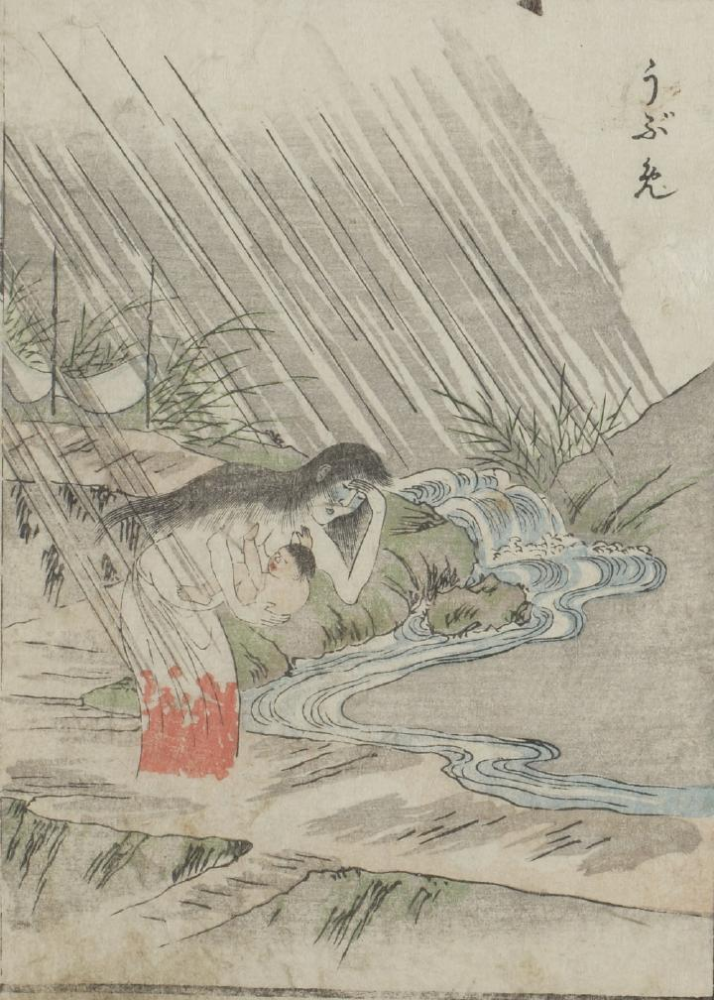

産女；ウブメ，赤子；アカゴ

うぶめが赤子を抱いている姿が描かれている。裾の部分が血に染まった腰巻を身にまとっている。
出典：親書誌：U426_nichibunken_0051：怪物画本；カイブツエホン／日付：2006／資源識別子：U426_nichibunken_0051_0023_0000
Copyright (c)2010- International Research Center for Japanese Studies, Kyoto, Japan. All rights reserved.